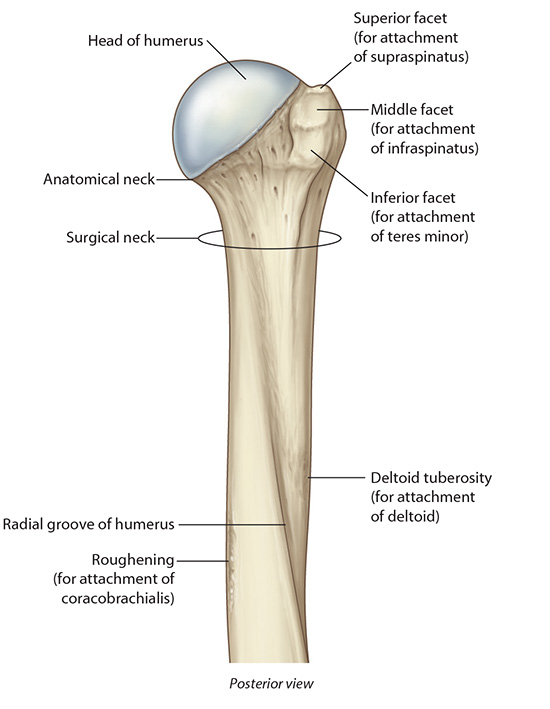
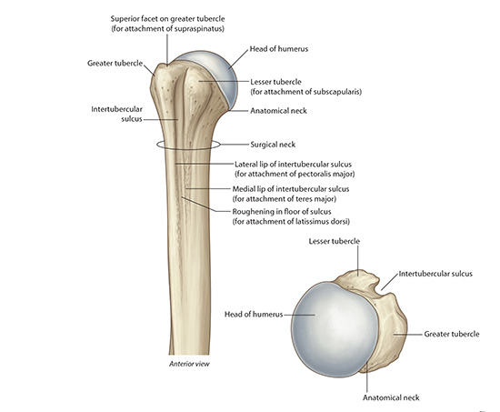
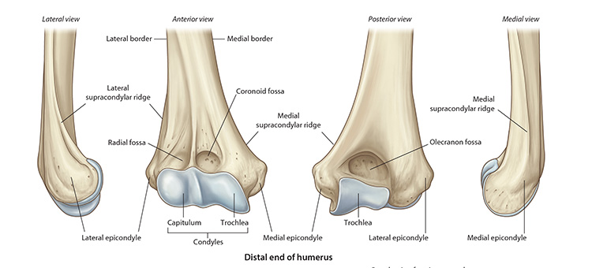

Lab3 - Module 1 - Anatomy of the Arm: Page 1 of 9
READINGS:Gray's Anatomy for Students (Fourth Edition): Pages: 740-750 |
CASE REPORT:34 y/o male presented to his physician with paresthesia's in the left 4th and 5th digits 3-4 months prior with no history of trauma. He reported left forearm numbness but denied neck pain. He noted weakness in his left hand and dropping objects. He is now disabled but had worked as a bricklayer. |
EXAMINATION: |
|
|
| The arm extends from the shoulder to the elbow. The anterior side is also referred to as the flexor side and has three muscles. The posterior side (Discussed in Lab 4) is also referred to as the extensor side and has the triceps muscle. |
|  |
| Tap on image to enlarge |
|  |
| Tap on image to enlarge |
|  |
| Tap on image to enlarge |
• The trochlea fits into the trochlear notch of the ulna. • Just proximal to the trochlea are the coronoid fossa and the olecranon fossa for accommodating corresponding parts of the ulna. • Adjoining the lateral part of the trochlea is the capitulum. Note the medial and lateral epicondyles; medial associated with the trochlea and lateral with the capitulum. From the epicondyles run the medial and lateral supracondylar ridges. |
You are in the Emergency Room and a patient arrives witha fractured humerus. What anatomical structures should you be concerned about? |
|
|
Because they are in contact with the humerus (surgical neck – axillary nerve; radial groove – radial nerve; and medial epicondyle – ulnar nerve), the axillary, radial, and ulnar nerves may be injured in fractures of the humerus. |
|